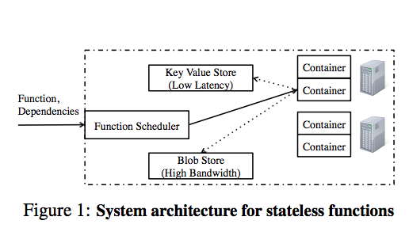

$$ \newcommand{\pmi}{\operatorname{pmi}} \newcommand{\inner}[2]{\langle{#1}, {#2}\rangle} \newcommand{\Pb}{\operatorname{Pr}} \newcommand{\E}{\mathbb{E}} \newcommand{\argmin}[2]{\underset{#1}{\operatorname{argmin}} {#2}} \newcommand{\optmin}[3]{ \begin{align*} & \underset{#1}{\text{minimize}} & & #2 \\ & \text{subject to} & & #3 \end{align*} } \newcommand{\optmax}[3]{ \begin{align*} & \underset{#1}{\text{maximize}} & & #2 \\ & \text{subject to} & & #3 \end{align*} } \newcommand{\optfind}[2]{ \begin{align*} & {\text{find}} & & #1 \\ & \text{subject to} & & #2 \end{align*} } $$
This paper by folks at Ben Recht’s lab describes a paradigm for distributed computation that centers on stateless functions or microservices; their description is accompanied by PyWren, an open-source implementation of their computation model.
Here’s the thesis:
In this paper we argue that a serverless execution model with stateless functions can enable radically-simpler, fundamentally elastic, and more user-friendly distributed data processing systems. In this model, we have one simple primitive: users submit [single-threaded] functions that are executed in a remote container; the functions are stateless as all the state for the function, including input, output is accessed from shared remote storage

Their implementation is powered by AWS Lambda, a service that lets users “run code without provisioning or managing servers.” A key property of Lambda is that you only pay for what you compute, and no more: i.e., you’re billed by compute time instead of by uptime. That makes billing straightforward, but it doesn’t make it cheap: the paper states that Lambda is 2x more expensive than on-demand instances.
The primary motivation of PyWren is to make distributed computation easy and fairly performant. From the paper:
Our proposal in this paper was motivated by a professor of computer graphics at UC Berkeley asking us “Why is there no cloud button?” He outlined how his students simply wish they could easily “push a button” and have their code – existing, optimized, single-machine code – running on the cloud. Thus, our fundamental goal here is to allow as many users as possible to take existing, legacy code and run it in parallel, exploiting elasticity
Many workloads apply the same function in a parallel fashion — i.e.,
many workloads reduce to the functional map (e.g., stochastic gradient
descent). PyWren offers a simple functional API that implements map by
launching a separate stateless function for each element in the mapped-over
list; these functions can be executed in parallel over AWS Lambda. The following
code snippet, taken from pywren.io, is an example:
def my_function(b):
x = np.random.normal(0, b, 1024)
A = np.random.normal(0, b, (1024, 1024))
return np.dot(A, x)
pwex = pywren.default_executor()
res = pwex.map(my_function, np.linspace(0.1, 100, 1000))
My opinion is that PyWren’s main appeal is its ease of use. If parallelizing code is really as easy as the above code snippet, then that’s really will make distributed computing more accessible. (It might even make it so accessible that people may use it when they could instead get cheaper and better performance out of a multi-threaded, single-machine implementation …)
PyWren disaggregates storage from compute; indeed, even beyond PyWren, disaggregation is an industry-wide trend. Remote flash is however tricky to get right. The author’s cite statistics showing that RF beats local SSDs on their particular AWS configuration, but I suspect that this is an artifact.
Ben Recht gave an interesting talk that touched on how one might use PyWren to scale up direct solve methods for linear systems (skip to about 15:20 for the discussion on PyWren).